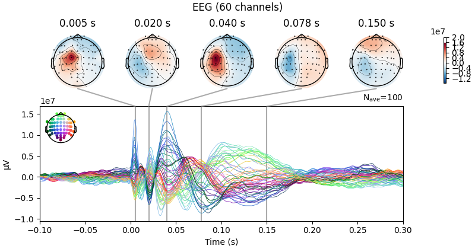
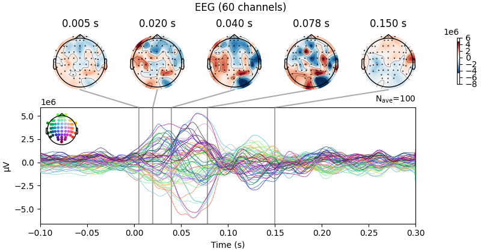
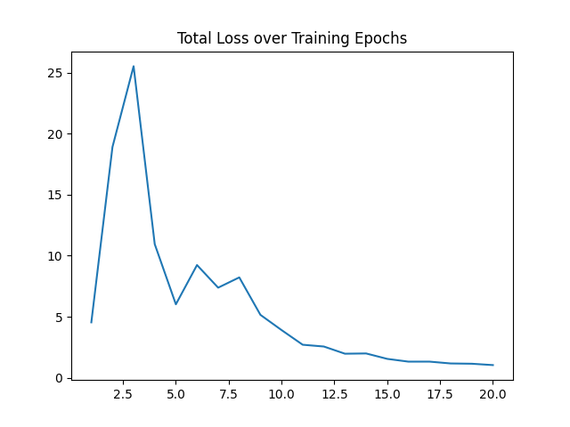
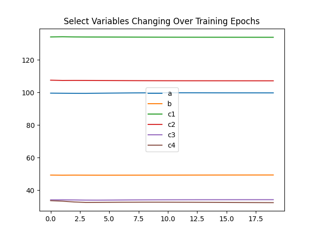

Note
Go to the end to download the full example code.
Modelling TMS-EEG evoked responses#
This example shows how to organize the empirical eeg data, set-up JR model with user-defined learnable model parameters and train model. After train how to test model with new inputs (noises) to generate simulated EEG. Furethermore, show some analysis based on uncovered neural states from the model.
First we must import the necessary packages required for the example:
# System-based packages
import os
import sys
sys.path.append('..')
# Whobpyt modules taken from the whobpyt package
import whobpyt
from whobpyt.datatypes import Parameter as par, Timeseries
from whobpyt.models.jansen_rit import JansenRitModel,JansenRitParams
from whobpyt.run import ModelFitting
from whobpyt.optimization.custom_cost_JR import CostsJR
from whobpyt.datasets.fetchers import fetch_egtmseeg
# Python Packages used for processing and displaying given analytical data (supported for .mat and Google Drive files)
import numpy as np
import pandas as pd
import scipy.io
import gdown
import pickle
import warnings
warnings.filterwarnings('ignore')
import matplotlib.pyplot as plt # Plotting library (For Visualization)
import mne # Neuroimaging package
Download and load example data
data_dir = fetch_egtmseeg()
Downloading Schaefer2018_200Parcels_7Networks_count.csv
Downloading Schaefer2018_200Parcels_7Networks_order_FSLMNI152_2mm.Centroid_RAS.txt
Downloading stim_weights.npy
Downloading Subject_1_low_voltage.fif
Downloading Subject_1_low_voltage_fittingresults_stim_exp.pkl
Downloading Subject_1_low_voltage_lf.npy
Load EEG data
eeg_file_name = os.path.join(data_dir, 'Subject_1_low_voltage.fif')
epoched = mne.read_epochs(eeg_file_name, verbose=False);
evoked = epoched.average()
Load Atlas
atlas_file_name = os.path.join(data_dir, 'Schaefer2018_200Parcels_7Networks_order_FSLMNI152_2mm.Centroid_RAS.txt')
atlas = pd.read_csv(atlas_file_name)
labels = atlas['ROI Name']
coords = np.array([atlas['R'], atlas['A'], atlas['S']]).T
conduction_velocity = 5 #in ms
Compute the distance matrix which is used to calculate delay between regions
Load the stim weights matrix which encode where to inject the external input
stim_weights = np.load(os.path.join(data_dir, 'stim_weights.npy'))
stim_weights_thr = stim_weights.copy()
labels[np.where(stim_weights_thr>0)[0]]
Load the structural connectivity matrix
Load the leadfield matrix
lm = os.path.join(data_dir, 'Subject_1_low_voltage_lf.npy')
ki0 =stim_weights_thr[:,np.newaxis]
delays = dist/conduction_velocity
define options for JR model: batch size integration step and sampling rate of the empirical eeg the number of regions in the parcellation and the number of channels
eeg_data = evoked.data.copy()
time_start = np.where(evoked.times==-0.1)[0][0]
time_end = np.where(evoked.times==0.3)[0][0]
eeg_data = eeg_data[:,time_start:time_end]/np.abs(eeg_data).max()*4
node_size = sc.shape[0]
output_size = eeg_data.shape[0]
batch_size = 20
step_size = 0.0001
num_epochs = 2 # num_epochs = 20
tr = 0.001
state_size = 6
base_batch_num = 20
time_dim = 400
state_size = 6
base_batch_num = 20
hidden_size = int(tr/step_size)
prepare empirical data structure of the model
get model parameters structure and define the fitted parameters by setting non-zero variance for the model
lm = np.zeros((output_size,200))
lm_v = np.zeros((output_size,200))
params = JansenRitParams(A = par(3.25),
a= par(100,100, 2, True),
B = par(22),
b = par(50, 50, 1, True),
g=par(500,500,2, True),
g_f=par(10,10,1, True),
g_b=par(10,10,1, True),
c1 = par(135, 135, 1, True),
c2 = par(135*0.8, 135*0.8, 1, True),
c3 = par(135*0.25, 135*0.25, 1, True),
c4 = par(135*0.25, 135*0.25, 1, True),
std_in= par(np.log(10), np.log(10), .1, True, True),
vmax= par(5),
v0=par(6),
r=par(0.56),
y0=par(-2, -2, 1/4, True),
mu = par(np.log(1.5),
np.log(1.5), .1, True, True, lb=0.1),
k =par(5., 5., 0.2, True, lb=1),
k0=par(0),
cy0 = par(50, 50, 1, True),
ki=par(ki0),
lm=par(lm, lm, 1 * np.ones((output_size, node_size))+lm_v, True)
)
call model want to fit
model = JansenRitModel(params,
node_size=node_size,
TRs_per_window=batch_size,
step_size=step_size,
output_size=output_size,
tr=tr,
sc=sc,
lm=lm,
dist=dist,
use_fit_gains=True,
use_fit_lfm = False)
# create objective function
ObjFun = CostsJR(model)
call model fit
F = ModelFitting(model, ObjFun)
model training given time-varing the stimulus
u = np.zeros((node_size,hidden_size,time_dim))
u[:,:,80:120]= 1000
F.train(u=u, empRecs = [data_mean], num_epochs = num_epochs, TPperWindow = batch_size)
Epoch: 0
epoch: 0 loss: 3.135431 Pseudo FC_cor: 0.011764502796314183 cos_sim: 0.060826039509449134
Epoch: 1
epoch: 1 loss: 2.4671896 Pseudo FC_cor: 0.05595798998966256 cos_sim: 0.001697045592247326
quick test run with 2 epochs
F.evaluate(u = u, empRec = data_mean, TPperWindow = batch_size, base_window_num = 20)
FC_cor: 0.028457683608678085 cos_sim: -0.016471660270750994
load in a previously completed model fitting results object run evaluate to generate the simulated eeg with new inputs based on the forward model
full_run_fname = os.path.join(data_dir, 'Subject_1_low_voltage_fittingresults_stim_exp.pkl')
F = pickle.load(open(full_run_fname, 'rb'))
F.evaluate(u = u, empRec = data_mean, TPperWindow = batch_size, base_window_num = 20)
FC_cor: 0.45079027812396927 cos_sim: 0.38182338551640627
Plot the original and simulated EEG data
epoched = mne.read_epochs(eeg_file_name, verbose=False);
evoked = epoched.average()
ts_args = dict(xlim=[-0.1,0.3])
ch, peak_locs1 = evoked.get_peak(ch_type='eeg', tmin=-0.05, tmax=0.01)
ch, peak_locs2 = evoked.get_peak(ch_type='eeg', tmin=0.01, tmax=0.02)
ch, peak_locs3 = evoked.get_peak(ch_type='eeg', tmin=0.03, tmax=0.05)
ch, peak_locs4 = evoked.get_peak(ch_type='eeg', tmin=0.07, tmax=0.15)
ch, peak_locs5 = evoked.get_peak(ch_type='eeg', tmin=0.15, tmax=0.20)
times = [peak_locs1, peak_locs2, peak_locs3, peak_locs4, peak_locs5]
plot = evoked.plot_joint(ts_args=ts_args, times=times);
simulated_EEG_st = evoked.copy()
simulated_EEG_st.data[:,time_start:time_end] = F.lastRec['eeg'].npTS()
times = [peak_locs1, peak_locs2, peak_locs3, peak_locs4, peak_locs5]
simulated_joint_st = simulated_EEG_st.plot_joint(ts_args=ts_args, times=times)


Projections have already been applied. Setting proj attribute to True.
Projections have already been applied. Setting proj attribute to True.
Plots of loss over Training (loss should be decressing with nosie)
plt.plot(np.arange(1,len(F.trainingStats.loss)+1), F.trainingStats.loss)
plt.title("Total Loss over Training Epochs")

Plots of parameter values over Training (check if converges)
plt.plot(F.trainingStats.fit_params['a'], label = "a")
plt.plot(F.trainingStats.fit_params['b'], label = "b")
plt.plot(F.trainingStats.fit_params['c1'], label = "c1")
plt.plot(F.trainingStats.fit_params['c2'], label = "c2")
plt.plot(F.trainingStats.fit_params['c3'], label = "c3")
plt.plot(F.trainingStats.fit_params['c4'], label = "c4")
plt.legend()
plt.title("Select Variables Changing Over Training Epochs")

Results Description#
The plot above shows the original EEG data and the simulated EEG data using the fitted Jansen-Rit model. The simulated data closely resembles the original EEG data, indicating that the model fitting was successful. Peak locations extracted from different time intervals are marked on the plots, demonstrating the model’s ability to capture key features of the EEG signal.
References#
Momi, D., Wang, Z., Griffiths, J.D. (2023). “TMS-evoked responses are driven by recurrent large-scale network dynamics.” eLife, 10.7554/eLife.83232. https://doi.org/10.7554/eLife.83232
Total running time of the script: (0 minutes 32.807 seconds)